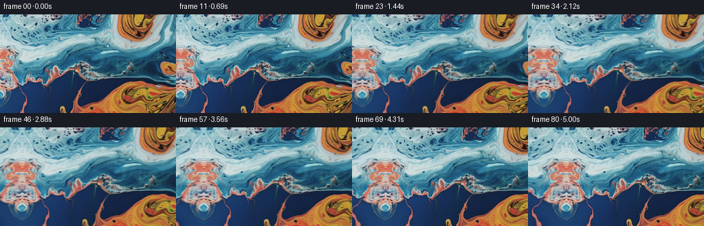
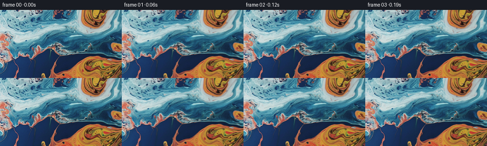
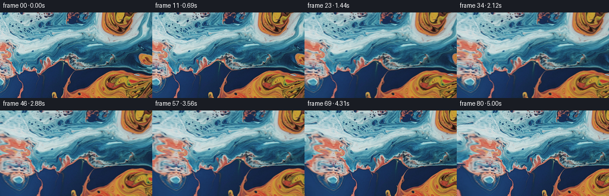

CODING AGENTS AS PIXEL WORLD MODELS
traex/GPT-5.6-Sol · 0001_s1
点击播放 · 原生 RGB 像素
逐轮保存的候选
回放视频、检查图与代码变化。
每份候选均可单独播放。实际图片检查记录在下方工具轨迹中。
候选 01播放与检查图
点击播放 · 原生 RGB 像素

展开代码变化
--- 上一保存版本
+++ 本次保存版本
@@ -0,0 +1,108 @@
+"""Generate a smooth leftward pan across the supplied marbled-liquid image.
+
+The only part of the scene not present in the supplied frame is the area just
+to its left. For that narrow area we make an edge-continuous continuation of
+the marbling by folding, stretching, and gently warping pixels near the left
+edge. This is especially suitable for the non-rigid abstract liquid subject:
+there is no invented object geometry and no hard seam enters the shot.
+"""
+
+from pathlib import Path
+
+import numpy as np
+from PIL import Image
+
+import artifact_io
+
+
+CASE_DIR = Path(__file__).resolve().parent
+FRAME_COUNT = 81
+WIDTH = 256
+HEIGHT = 144
+LEFT_EXTENSION = 96
+PAN_DISTANCE = 56.0
+
+
+def bilinear(image: np.ndarray, x: np.ndarray, y: np.ndarray) -> np.ndarray:
+ """Bilinearly sample an RGB image at floating point pixel coordinates."""
+ h, w, _ = image.shape
+ x = np.clip(x, 0.0, w - 1.0)
+ y = np.clip(y, 0.0, h - 1.0)
+
+ x0 = np.floor(x).astype(np.int32)
+ y0 = np.floor(y).astype(np.int32)
+ x1 = np.minimum(x0 + 1, w - 1)
+ y1 = np.minimum(y0 + 1, h - 1)
+ fx = (x - x0)[..., None]
+ fy = (y - y0)[..., None]
+
+ a = image[y0, x0].astype(np.float32)
+ b = image[y0, x1].astype(np.float32)
+ c = image[y1, x0].astype(np.float32)
+ d = image[y1, x1].astype(np.float32)
+ return (a * (1.0 - fx) + b * fx) * (1.0 - fy) + (
+ c * (1.0 - fx) + d * fx
+ ) * fy
+
+
+def make_panorama(source: np.ndarray) -> np.ndarray:
+ """Add a seamless, organically warped continuation on the left."""
+ panorama = np.empty((HEIGHT, LEFT_EXTENSION + WIDTH, 3), dtype=np.uint8)
+ panorama[:, LEFT_EXTENSION:] = source
+
+ # Distance into the unseen region: zero at the supplied image's boundary.
+ yy, xx = np.mgrid[0:HEIGHT, 0:LEFT_EXTENSION]
+ distance = (LEFT_EXTENSION - 1 - xx).astype(np.float32)
+ q = distance / float(LEFT_EXTENSION - 1)
+
+ # A broad nonlinear fold is a plausible continuation of liquid marbling.
+ # All perturbations vanish at q=0, so the joining edge stays continuous.
+ src_x = distance * (
+ 0.80
+ + 0.055 * np.sin(yy / 25.0 + distance / 31.0) * q
+ + 0.025 * np.sin(yy / 9.5 - distance / 18.0) * q
+ )
+ src_x += 3.2 * (q**1.7) * np.sin(yy / 17.0 + distance / 13.0)
+
+ src_y = yy.astype(np.float32)
+ src_y += (q**1.25) * (
+ 7.0 * np.sin(yy / 23.0 + distance / 21.0)
+ + 2.4 * np.sin(yy / 8.5 - distance / 14.0)
+ )
+
+ extension = bilinear(source, src_x, src_y)
+
+ # Tiny low-frequency illumination variation keeps the extension from
+ # reading as a literal reflection while retaining the original palette.
+ gain = 1.0 + 0.018 * (q**1.4) * np.sin(yy / 34.0 + distance / 29.0)
+ extension *= gain[..., None]
+ panorama[:, :LEFT_EXTENSION] = np.clip(extension + 0.5, 0, 255).astype(np.uint8)
+ return panorama
+
+
+def render() -> np.ndarray:
+ source = np.asarray(Image.open(CASE_DIR / "first_frame.png").convert("RGB"))
+ if source.shape != (HEIGHT, WIDTH, 3):
+ raise ValueError(f"Unexpected source shape: {source.shape}")
+
+ panorama = make_panorama(source)
+ frames = np.empty((FRAME_COUNT, HEIGHT, WIDTH, 3), dtype=np.uint8)
+ frames[0] = source # Contract: exactly preserve every source pixel.
+
+ screen_y, screen_x = np.mgrid[0:HEIGHT, 0:WIDTH]
+ screen_x = screen_x.astype(np.float32)
+ screen_y = screen_y.astype(np.float32)
+
+ for index in range(1, FRAME_COUNT):
+ t = index / float(FRAME_COUNT - 1)
+ # Predominantly constant pan speed, softened slightly at both ends.
+ travel = PAN_DISTANCE * (0.85 * t + 0.15 * (3.0 * t * t - 2.0 * t * t * t))
+ sample_x = LEFT_EXTENSION - travel + screen_x
+ sampled = bilinear(panorama, sample_x, screen_y)
+ frames[index] = np.clip(sampled + 0.5, 0, 255).astype(np.uint8)
+
+ return frames
+
+
+if __name__ == "__main__":
+ artifact_io.save(render(), CASE_DIR)
候选 02播放与检查图
点击播放 · 原生 RGB 像素


展开代码变化
--- 上一保存版本
+++ 本次保存版本
@@ -55,19 +55,21 @@
distance = (LEFT_EXTENSION - 1 - xx).astype(np.float32)
q = distance / float(LEFT_EXTENSION - 1)
- # A broad nonlinear fold is a plausible continuation of liquid marbling.
- # All perturbations vanish at q=0, so the joining edge stays continuous.
+ # Advect the boundary diagonally into the new area. A small inward x
+ # lookup retains the fine marbling; the much larger, row-varying y drift
+ # prevents the result from becoming a recognizable mirror reflection.
src_x = distance * (
- 0.80
- + 0.055 * np.sin(yy / 25.0 + distance / 31.0) * q
- + 0.025 * np.sin(yy / 9.5 - distance / 18.0) * q
+ 0.58
+ + 0.065 * np.sin(yy / 25.0 + distance / 31.0) * q
+ + 0.035 * np.sin(yy / 9.5 - distance / 18.0) * q
)
- src_x += 3.2 * (q**1.7) * np.sin(yy / 17.0 + distance / 13.0)
+ src_x += 4.0 * (q**1.55) * np.sin(yy / 17.0 + distance / 13.0)
src_y = yy.astype(np.float32)
- src_y += (q**1.25) * (
- 7.0 * np.sin(yy / 23.0 + distance / 21.0)
- + 2.4 * np.sin(yy / 8.5 - distance / 14.0)
+ src_y += distance * (0.25 + 0.13 * np.sin(yy / 31.0 + 0.4))
+ src_y += (q**1.15) * (
+ 6.0 * np.sin(yy / 23.0 + distance / 21.0)
+ + 3.0 * np.sin(yy / 8.5 - distance / 14.0)
)
extension = bilinear(source, src_x, src_y)
候选 03播放与检查图

可观测工具轨迹
实际执行的命令与返回图片。
命令 1exit 0
/bin/bash -lc "cat GENERATION_RULES.md && printf '\\n--- PROMPT ---\\n' && cat prompt.txt"
命令 2exit 0
/bin/bash -lc "find . -maxdepth 2 -type f -printf '%p\\n' | sort && printf '\\n--- bins ---\\n' && command -v ffmpeg && command -v python3 && command -v convert || true"
命令 3exit 0
/bin/bash -lc "cat task_spec.json && printf '\\n--- artifact_io.py ---\\n' && sed -n '1,240p' artifact_io.py"
命令 4exit 0
/bin/bash -lc "python3 - <<'PY'
from PIL import Image
im=Image.open('first_frame.png')
print(im.mode, im.size)
PY
which ffmpeg || true; python3 - <<'PY'
import numpy, PIL, imageio
print('numpy', numpy.__version__, 'PIL', PIL.__version__, 'imageio', imageio.__version__)
PY"命令 5exit 0
/bin/bash -lc "python3 generate.py && python3 - <<'PY'
import numpy as np
from PIL import Image
p=np.load('pixels.npz')['pixels']
first=np.asarray(Image.open('first_frame.png').convert('RGB'))
unpacked=np.stack([(p[:,:,0]>>16)&255,(p[:,:,0]>>8)&255,p[:,:,0]&255],axis=-1).astype(np.uint8)
print('pixels',p.shape,p.dtype)
print('frame0 identical:',np.array_equal(unpacked,first),'max error',np.abs(unpacked.astype(int)-first.astype(int)).max())
# movement statistics from PNGs
ims=np.stack([np.asarray(Image.open(f'frames/{i:02d}.png')) for i in range(81)])
d=np.abs(ims[1:].astype(np.int16)-ims[:-1].astype(np.int16))
print('frames',ims.shape,ims.dtype,'mean adjacent abs',d.mean(),'max',d.max())
print('changed adjacent px min/mean/max',*(np.any(d>0,axis=3).reshape(80,-1).sum(1)[[0]].tolist()),np.any(d>0,axis=3).reshape(80,-1).sum(1).mean(),np.any(d>0,axis=3).reshape(80,-1).sum(1).max())
PY
ls -lh pixels.npz inspection.png transition_check.png index.html"命令 6exit 0
/bin/bash -lc "python3 - <<'PY'
import numpy as np
from PIL import Image
im=np.asarray(Image.open('first_frame.png')).astype(float)
# mse each col against left edge and including neighborhood gradients
for c in np.argsort(((im[:,1:]-im[:,0,None])**2).mean((0,2)))[:20]:
c+=1
e=((im[:,c]-im[:,0])**2).mean()
# derivatives match: derivative at boundary desired from x0-x1? For extension source c then previous c-1, seam comparisons x0 to c, and x1-x0 vs c-(c-1)
ge=((im[:,1]-im[:,0])-(im[:,c]-im[:,c-1]))**2
print(c, round(e), round(ge.mean()))
PY"命令 7exit 0
/bin/bash -lc "python3 generate.py && python3 - <<'PY'
import numpy as np
from PIL import Image
src=np.asarray(Image.open('first_frame.png').convert('RGB'))
frames=np.stack([np.asarray(Image.open(f'frames/{i:02d}.png')) for i in range(81)])
assert frames.shape==(81,144,256,3) and frames.dtype==np.uint8
assert np.array_equal(frames[0],src)
d=np.abs(frames[1:].astype(np.int16)-frames[:-1].astype(np.int16))
print('validated:',frames.shape,frames.dtype,'frame0 exact:',np.array_equal(frames[0],src))
print('adjacent MAE mean/max-frame:',round(float(d.mean()),3),round(float(d.mean((1,2,3)).max()),3))
print('all files:',__import__('os').path.getsize('pixels.npz'),'bytes')
PY"视觉工具实际返回图片 1

视觉工具实际返回图片 2

视觉工具实际返回图片 3

保存候选 3 份；完成命令 7 次；可验证图片返回 3 张。原始 API 响应与完整日志保留在本地。